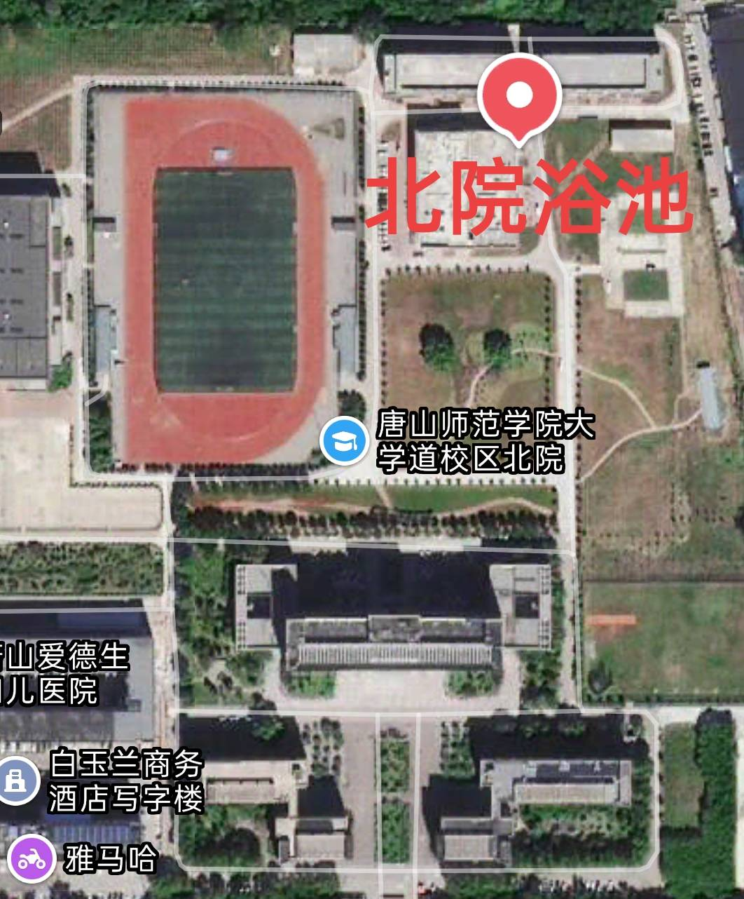
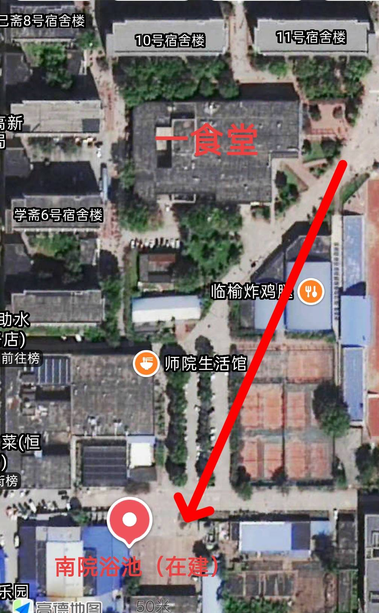
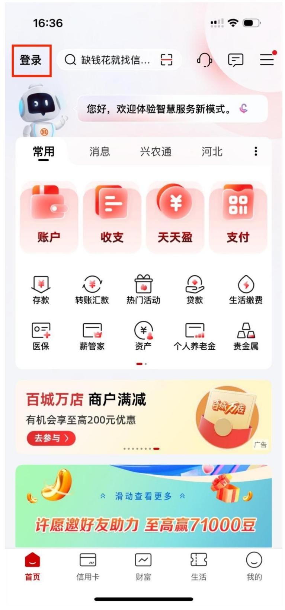
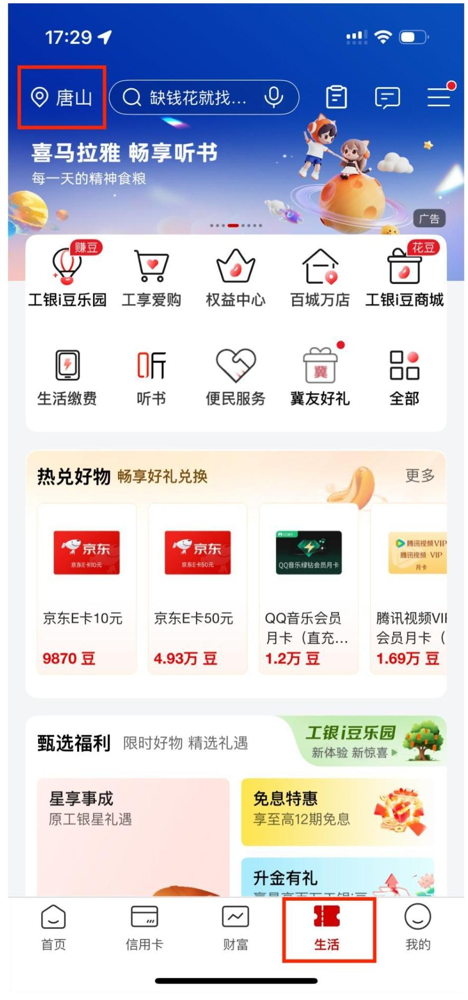
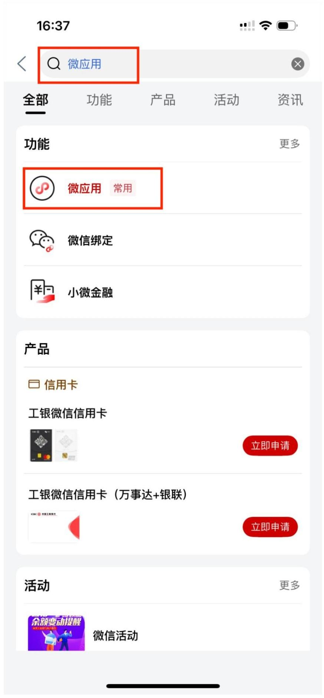
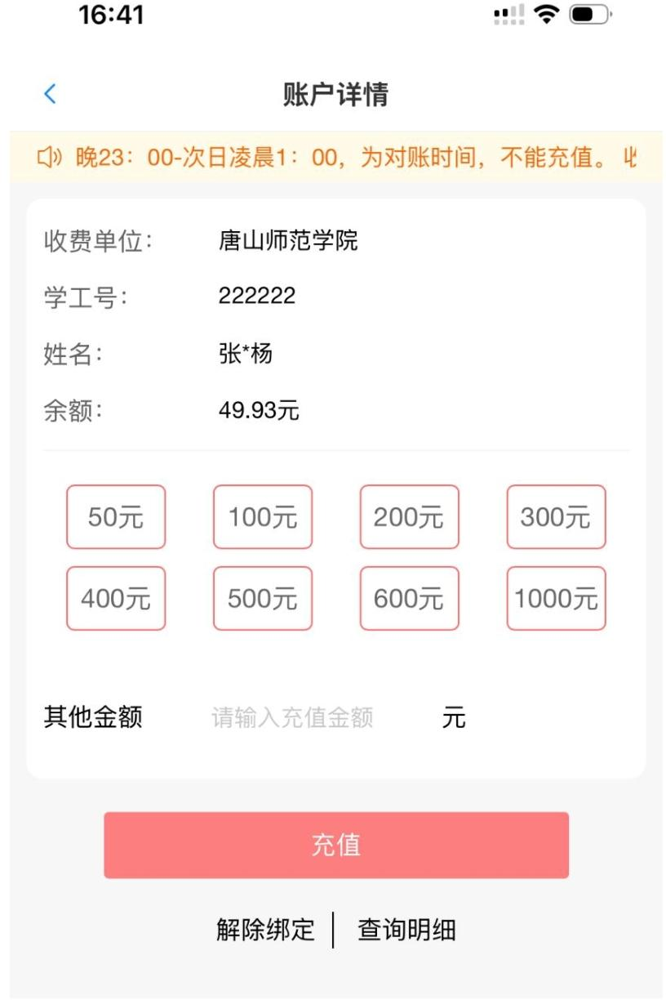
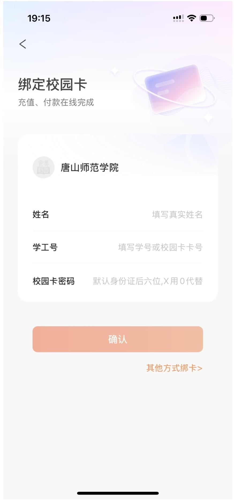
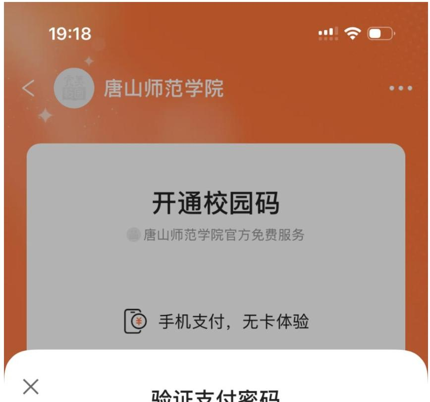

Military training is physically intense and you will sweat a lot every day. Showering and using the Campus Card are two of the first practical problems Freshmen run into. This guide brings together the locations of all campus bathhouses, shower rules, and the full process for recharging, reporting the loss of, and replacing your Campus Card so you can avoid unnecessary trips.
I. Bathhouse Locations and Basic Information
All three campuses use the same shower pricing, and the equipment only accepts a physical Campus Card for payment. Mobile campus QR codes cannot be used for showering.
1. Daxuedao Campus
North Courtyard Public Bathhouse: Located on the east side of the North Courtyard cafeteria, currently open. It is closer to North Courtyard dormitories; students from the South Courtyard should plan the walk in advance.

South Courtyard Public Bathhouse: Located on the south side of the first cafeteria in the South Courtyard, near the Shiyuan Life Hall. It is currently under renovation and is expected to open in September when the semester starts. At the beginning of the semester, South Courtyard Freshmen should use the North Courtyard bathhouse.

2. Xueyuan Road Campus
The public bathhouse is located on the east side of the Sports and Culture Hall, with the same pricing as Daxuedao Campus.
3. Shower Pricing
| Item | Target Group | Unit | Rate | Payment Method |
|---|---|---|---|---|
| Student Bathhouse | Faculty and Students | Yuan/minute | 0.12 | Campus Card |
Source: Shower Hot Water Pricing Public Notice (School Fee Verification [2025] No. 1)
II. Basic Shower Rules
1. Required Credential: Physical Campus Card
The physical student card with your photo and student number is your credential for dorm access, cafeteria purchases, and the only way to start a shower. The showerhead only starts when the physical card is inserted. Mobile “Perfect Campus” QR codes cannot be used for showering; without the physical card you cannot shower.
2. Billing
All bathhouses charge by actual water usage time at a uniform rate of 0.12 yuan/minute. Insert the card to start water and billing; remove the card to stop.
3. Facilities
Bathhouses provide public hair dryers; shower stalls have individual spray heads; lockers do not have built-in locks. Bring a small padlock for your phone, keys, and other valuables.
III. Practical Shower Tips During Military Training
- Avoid peak times: Right after training ends is the busiest time, with crowds and unstable water pressure. Consider going earlier or later.
- Watch your step: Floors are constantly wet. Walk slowly to avoid slipping.
- Dry your hair before leaving: Day-night temperature differences are large in late summer and fall; dry your hair completely before going outside. Hair dryers may have long lines, so a quick-dry hair towel is recommended.
- Be considerate: Take your trash with you, do not occupy a shower stall or hair dryer for a long time, and queue politely.
What to Bring
- Essentials: shampoo, body wash, towel, non-slip slippers, a complete change of clothes, waterproof toiletry bag, Campus Card
- Recommended: quick-dry hair towel, small padlock
Note: do not bring large amounts of cash into the bathhouse
IV. Complete Campus Card Guide
(1) Basic Campus Card Functions
The physical Campus Card is the core credential for daily life on campus. It covers showering, cafeteria and store purchases, school gate/library access, and dorm entry. The “Perfect Campus” app can only check balances, view transaction records, and scan QR codes for cafeteria/store purchases. It cannot recharge the card or be used for showering. Please keep the difference clear.
(2) Only Online Recharge Channel: ICBC Mobile App
“Perfect Campus” cannot recharge the Campus Card. Recharges must be made through the ICBC mobile app as follows:
- Log in to the ICBC mobile app.
- Tap “Life” at the bottom and switch the location to Tangshan.
- Enter “Mini Apps” in the top search box, then select “Campus Card”.
- Select Tangshan as the region and “Tangshan Normal University” as the billing unit. Enter your student number, check “Set as frequently used account”, and tap Next.
- Choose a recharge amount (50/100/200/300/500/1000 yuan, or a custom amount) and complete payment.




Important reminders:
- Recharge is unavailable from 23:00 to 01:00 due to system reconciliation.
- Online recharge only updates the online account balance. You must tap the physical card on a shower reader, cafeteria POS machine, or use a transfer machine to sync the balance to the card. Otherwise the shower reader may show insufficient balance.
(3) “Perfect Campus” App Functions
After downloading and logging in, select “Tangshan Normal University” as your school and tap “Bind Campus Card” on the home page.
Enter your name and student number; the default password is the last six digits of your ID number (replace a trailing “X” with “0”).

After binding you can: check card balance, view transaction records, report the card lost online, change the payment password, and enable the campus QR code for cafeteria/store scanning.
The campus QR code activation page looks like this:

Limitations: You cannot recharge the Campus Card, and the campus QR code cannot be used in the bathhouse. Showering requires a physical card.
(4) Lost Card, Replacement, Reporting Loss, and Password Reset
1. Self-service card replacement (recommended)
- Daxuedao Campus: self-service card machine at the south door on the first floor of the first cafeteria
- Xueyuan Road Campus: self-service card machine at the south door of the cafeteria
Process: enter student number and Campus Card password (default is the last 6 digits of your ID number; replace a trailing “X” with “0”) → place your second-generation ID card for verification → read the replacement notes → pay the 10-yuan replacement cost (automatically deducted from card balance; if balance is insufficient, recharge via the ICBC app first so the balance is at least 10 yuan) → complete replacement and card printing. The machine will automatically check for any unclaimed funds.
Important: you must bring your second-generation ID card for self-service replacement.
2. Fund claim service
After reporting the card lost and replacing it, you must wait 24 hours from the time of loss before claiming funds. Place the card first, tap “Fund Claim Service”, and the machine will detect the card, show the claim screen, and display claimable amounts. Tap claim and collect each item until finished.
3. Self-service loss reporting
Tap “Report Loss”, enter your student number and Campus Card consumption password. The system will verify the information. If verification succeeds, loss reporting succeeds; otherwise the machine will show the corresponding result.
4. Change or reset password
Change password: place the card on the reader, tap “Change Password”, enter the old and new passwords, and confirm. The system verifies the passwords and prompts success.
Reset password: if you forget the old password, you can directly enter a new password, tap “Reset”, and place your second-generation ID card for verification. After verification the password is reset.
5. Manual replacement (when self-service machine is out of cards or broken)
If the self-service machine is out of cards or malfunctioning, go to the Campus Card Service Center on the first floor of the North Courtyard main building during weekday working hours for manual replacement.
Contact Numbers
- Daxuedao Campus Card Center: 0315-3863030
- Xueyuan Road Campus Card Center: 0315-2210423
- Campus Card Equipment Service: 4000099095
V. Additional Important Reminders
- Self-service card machines only handle replacement, fund claim, loss reporting, and password change/reset. For transfer/recharge services, use a dedicated transfer machine.
- Bathhouse opening hours are subject to posted notices on site; check the schedule before going.
- Showering requirement: a physical Campus Card must be inserted; mobile QR codes are invalid. Do not forget your card after training.
- After recharging, remember to tap the card on a reader to sync the balance, so you do not end up with a successful recharge but “insufficient balance” at the shower.
- Return public hair dryers after use and do not take them away. Help keep bathhouse facilities in good condition.
- Take good care of your physical Campus Card. Losing it will directly affect showering, access control, and dining.
TSNU Bar Mod Team
July 26, 2026